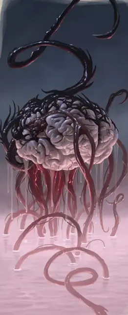

Старший мозг
Elder Brain
Большая Аберрация, законно-злая

Класс Доспеха 10
Хиты 210 (20к10 + 100)
Скорость 5 футов, плавая 10 футов
| мод | спас | ||
|---|---|---|---|
| СИЛ | 15 | +2 | +2 |
| ЛОВ | 10 | +0 | +0 |
| ТЕЛ | 20 | +5 | +5 |
| мод | спас | ||
|---|---|---|---|
| ИНТ | 21 | +5 | +10 |
| МДР | 19 | +4 | +9 |
| ХАР | 24 | +7 | +12 |
Навыки Запугивание +12, Магия +10, Обман +12, Проницательность +14, Убеждение +12
Чувства слепое зрение 120 футов, пассивное Восприятие 14
Языки понимает Общий, Глубинную речь, и Подземный, но не может говорить, Телепатия 5 миль
Опасность 14 (11500 опыта)
Бонус мастерства +5
Среда обитания Подземье
Особенности
Чутье существ. . Старший мозг знает о присутствии существ в радиусе 5 миль от себя, чей Интеллект 4 или выше. Он знает расстояние и направление до каждого существа, а так же значение параметра Интеллект, но больше ничего не может почувствовать. Существо, защищенное заклинанием сокрытие разума [mind blank], необнаружимость [nondetection] или похожей магией, он почувствовать не может.
Врождённое колдовство (Псионика). . Базовой характеристикой старшего мозга является Интеллект (Сл спасброска от заклинаний 18). Он может накладывать следующие заклинания без использования компонентов:
• Неограниченно: обнаружение мыслей [detect thoughts], левитация [levitate].
• 1/день каждое: подчинение чудовища [dominate monster], уход в иной мир [plane shift] (только на себя).
Легендарное сопротивление (3/день). . Если старший мозг проваливает спасбросок, то он вместо этого может выбрать успех.
Сопротивление магии. . Старший мозг имеет преимущество на спасброски против заклинаний и других магических эффектов.
Усилитель телепатии. . Старший мозг может использовать телепатию для начала и поддержания телепатических разговоров с десятью существами одновременно. Старший мозг может разрешить этим существам телепатически слышать друг друга во время такого соединения.
Действия
Щупальца. Рукопашная атака оружием: +7 к попаданию, досягаемость 30 футов, одна цель. Попадание: 20 (4к8 + 2) дробящего урона. Если размер цели Огромный или меньше, то она будет схвачена (Сл высвобождения 15) и получает 9 (1к8 + 5) урона психической энергией в начале каждого своего хода пока не окончится захват. Старший мозг может держать в захвате одновременно до четырех целей.
Взрыв разума (Перезарядка 5–6). Старший мозг магически испускает психическую энергию. Существа по выбору старшего мозга, находящиеся не далее 60 футов от него, должны успешно пройти спасбросок Интеллекта Сл 18 или получить 32 (5к10 + 5) урона психической энергией и стать ошеломленными на 1 минуту. Цель может повторять спасбросок в конце каждого своего хода и окончить эффект при успехе.
Психическая связь. Старший мозг выбирает целью одно недееспособное существо, которое может почувствовать своей чертой Чутье Существ, и устанавливает с ним психическую связь. До окончания этой связи старший мозг может воспринимать все чувствами цели. Цель знает о том, что что–то подсоединилось к её разуму, если она уже дееспособна, а старший мозг может разорвать связь в любой момент (действие не требуется). Цель может использовать действие в свой ход и попытаться разорвать психическую связь, для чего нужно успешно пройти спасбросок Харизмы Сл 18. При успехе цель получает 10 (3к6) урона психической энергией. Психическая связь также разрывается если цель и старший мозг находятся далее 5 миль друг от друга, и тогда цель не испытывает никаких последствий. Старший мозг может сформировать до 10 психических связей одновременно.
Чутье мыслей. Старший мозг выбирает целью существо, с которым у него психическая связь. Старший мозг получает видение мотивов цели, её эмоционального состояния и мыслей, которые занимают её разум (включают вещи о которых заботится цель, любит или ненавидит). Старший мозг также может сделать проверку Харизмы (Обман) с преимуществом, чтобы обмануть разум цели и заставить её верить в одну идею или испытывать конкретную эмоцию. Цель соревнуется с этой попыткой проверкой Мудрости (Проницательность). Если старший мозг достигает успеха, то разум верит в обман 1 час или пока ложь не станет очевидной.
Легендарные действия
Старший мозг может предпринять 3 легендарных действия, выбрав из вариантов ниже. Можно использовать только одно легендарное действие за один раз и только в конце хода другого существа. Старший мозг восстанавливает потраченные легендарные действия в начале своего хода.
Щупальца. Старший мозг совершает одну атаку щупальцами.
Слом концентрации. . Старший мозг выбирает целью существо не далее 120 футов от себя, с которым у него есть психическая связь. Старший Мозг ломает концентрацию существа на заклинании, которое оно сотворило. Существо также получает 1к4 урона психической энергией за каждый уровень заклинания.
Психическая пульсация. . Старший мозг выбирает целью существо не далее 120 футов от себя, с которым у него есть психическая связь. Враги старшего мозга, находящиеся не далее 10 футов от этого существа получают 10 (3к6) урона психической энергией.
Разрыв психической связи. Старший мозг выбирает целью существо, которое находится не далее 120 футов от него и имеет с ним психическую связь. Старший мозг разрывает связь и существо получает помехи на все проверки характеристик, броски на попадание и спасброски до конца своего следующего хода.
Логово
Логово старшего мозга всегда лежит глубоко в сердце колонии свежевателей разума. Существо обитает в тускло светящемся бассейне соляного раствора, наполненного отвратительной и солоноватой водой, насыщенной жизненными флюидами старшего мозга и псионической энергией.
Действия логова
Сражаясь в логове, старший мозг может использовать действия в логове. По инициативе 20 (проигрыш при ничьей) старший мозг может сделать одно действие в логове, чтобы вызвать один из следующих эффектов; старший мозг не может использовать одно и то же действие два раунда подряд:
• Старший мозг накладывает заклинание силовая стена [wall of force].
• Старший мозг выбирает целью одно дружелюбное существо, которое может почувствовать не далее 120 футов от него. Цель получает вспышку вдохновения и получает преимущество на один бросок на попадание, проверку характеристики или спасбросок, которые он совершает до конца своего следующего хода. Если цель не хочет или не может использовать это преимущество, то вдохновение теряется.
• Старший мозг выбирает целью одно существо, которое может почувствовать не далее 120 футов от себя и пригвождает его силой воли. Цель должна преуспеть в спасброске Харизмы Сл 18 или не сможет покинуть свое текущее место. Цель может повторять спасбросок в конце каждого своего хода, и закончить эффект при успехе.
Местные эффекты
Территория в радиусе 5 миль от старшего мозга изменяется псионическим присутствием существа, что создает один или несколько из следующих эффектов:
• Существа не далее 5 миль от старшего мозга чувствуют как за ними следят, даже если на самом деле ничего такого не происходит.
• Старший мозг может подслушать любое телепатические разговоры, которые происходят не далее 5 миль от него. Существо, которое инициировало телепатический разговор совершает проверку Мудрости (Проницательность) Сл 18, когда телепатический контакт налаживается в первый раз. Если проверка пройдена успешно, то существо осознает, что кто–то подслушивает разговор. Природа подслушивающего не ясна, и старший мозг не может участвовать в телепатическом разговоре, если только он не сформировал психическую связь с существом, которое его начало.
• Любое существо, с которым старший мозг сформировал психическую связь, слышит слабые неразличимые шепотки в глубочайших уголках разума. Психические осколки состоят из бессвязных мыслей старшего мозга смешанных с мыслями остальных существ, с которыми он связан.
Если старший мозг умирает, то эти эффекты немедленно заканчиваются.
Описание
Высшая форма доминирования иллитидов – старший мозг, нежится в ванне вязкого соляного раствора и прикасается к мыслям существ вблизи и вдали от себя. Он небрежно рисует на холсте их разумов, переписывая их мысли и затуманивая их сны.
Психическое Вторжение. Когда старший мозг вторгается в разум, то он меняет восприятие существа и обманывает его чувства, заставляя видеть, слышать, чувствовать вкус или ощущать реальность так, как желает старший мозг. На больших расстояниях он вкладывает подсознательные предложения или тонко влияет на сны и подталкивает существ к тому курсу действий, который идет на пользу его великому плану.
Если его коварные предложения не закрепляются в голове, то старший мозг утверждает свое доминирование более непосредственно. Он устанавливает контроль над сопротивляющимся разумом и контролирует тело существа как куклу. Против редких, стойких существ с сильной волей, которые отрицают его или нападают сами, старший мозг посылает заряд ошеломляющей психической силы для разрушения разума выскочки, оставляя от существа бездумную, распускающую слюни оболочку.
Пожиратель Мыслей. Старший мозг питается, поглощая мозги других существ. Когда служащие свежеватели разума, которые охраняют и как правило носят пищу старшему мозгу напрямую, не справляются со своей задачей, старший мозг протягивается мысленными усиками, убеждая существ прийти к нему, чтобы он мог их съесть.
Когда свежеватель разума умирает, слуги старшего мозга скармливают содержимое его черепа своему хозяину, который поглощает мозг иллитида и все содержащиеся в нем знания и опыт. Таким способом старший мозг постоянно увеличивает свои знания, объединяя мысли и опыт колонии иллитидов в единое целое. Свежеватели разума считают это «единение» священным состоянием так же как поклоняющиеся человеческому божеству видят вечную жизнь после смерти в раю – так как старший мозг может вызвать личность любого иллитида, которого поглотил.
Улей Разумов. Не–иллитиды называют это существо старшим мозгом, потому что он действует как центральный коммуникативный узел всей колонии свежевателей разума, также как и мозг для живого тела. Колония, подсоединенная к старшему мозгу, действует как единый организм, единым образом, как если бы каждый иллитид был бы пальцем руки.
Невероятное Эго. Каждый старший мозг считает себя и свои желания самыми важными вещами в мультивселенной, а свежевателей разума в своей колонии не более чем продолжением своей воли. Нет двух одинаковых старших мозгов, и каждый руководит своей колонией по–разному в соответствии со своей уникальной личностью и запасом собранных знаний и опыта. Некоторые старшие мозги правят как доминирующие тираны, а другие держатся более милостиво как мудрецы, советники и хранилища знаний и легенд для свежевателей разума, которые защищают и питают его.
Амбиции старшего мозга всегда умерены его относительной неподвижностью. Хотя его телепатические чувства могут распространяться на мили, двигаться куда– либо это всегда опасное предприятие. Если его вынудят выйти из бассейна солевого раствора, то старший мозг быстро угаснет, а частые перемещения старшего мозга в его бассейне через тесные и извилистые подземные тоннели очень трудны или невозможны.